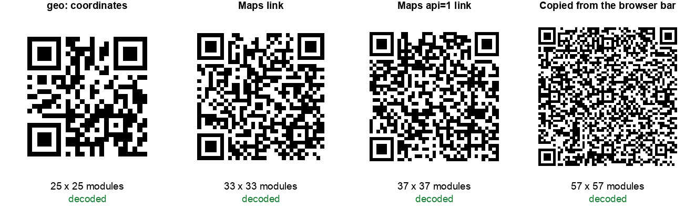

There is no single way to put a place inside a QR code. There are at least five, they all work, and almost nobody chooses between them deliberately. The usual approach is to open Google Maps, find the spot, copy whatever is in the address bar, and paste it into a generator.
That habit has a cost, and it is larger than we expected. We encoded one location five different ways and measured how big each code came out.
The short version: the link you copy from your browser produced a 57 x 57 code. The same place as plain coordinates produced 25 x 25. That is 5.2 times the area for information neither you nor the scanner needs.
The five formats, and what they look like
We used Grand Central Terminal in New York, at 40.752726, -73.977229, because it is a real place anyone can check. Here is each format written out:
| Format | What you encode | Characters |
|---|---|---|
| geo: coordinates | geo:40.752726,-73.977229 | 24 |
| Plain address text | 89 E 42nd St, New York, NY 10017 | 32 |
| Maps link, short form | https://maps.google.com/?q=40.752726,-73.977229 | 47 |
| Apple Maps link | https://maps.apple.com/?ll=40.752726,-73.977229 | 47 |
| Maps link, documented form | https://www.google.com/maps/search/?api=1&query=… | 68 |
| Copied from the browser bar | https://www.google.com/maps/place/Grand+Central+Terminal/@40.7527,… | 187 |
That last one deserves a closer look, because it is the one people actually use. A link copied out of Google Maps carries the place name, the map centre, the zoom level, a data blob of internal place identifiers, and the coordinates again in a different notation. All of it goes into the QR code. All of it has to be read back by a camera.
The result

| Format | Chars | Version | Grid | Area vs geo: | Decoded |
|---|---|---|---|---|---|
| geo: coordinates | 24 | 2 | 25 x 25 | 1.0x | Yes |
| Plain address text | 32 | 3 | 29 x 29 | 1.3x | Yes |
| Maps link, short form | 47 | 4 | 33 x 33 | 1.7x | Yes |
| Apple Maps link | 47 | 4 | 33 x 33 | 1.7x | Yes |
| Maps link, documented form | 68 | 5 | 37 x 37 | 2.2x | Yes |
| Copied from the browser bar | 187 | 10 | 57 x 57 | 5.2x | Yes |
Every one of them decoded, so nothing here is broken. The difference is not about whether a code works on a screen. It is about how much room each module gets when the code is printed at a fixed size.
The finding in one line: going from a copied browser link to plain coordinates cut the grid from 57 x 57 to 25 x 25. At the same printed width, that makes every black square more than twice as wide.
Why this matters on paper, not on screen
On a phone screen, a 57 x 57 code is fine. Print it on a wedding invitation and the arithmetic turns against you.
Printing guidance generally puts the practical floor for a laser printed module at around 0.4 mm, below which ink spread and camera focus start to work against you. Take that figure and the four codes need very different amounts of paper, including the four module quiet zone the specification requires on every side:
| Format | Grid + quiet zone | Minimum printed width at 0.4 mm modules |
|---|---|---|
| geo: coordinates | 33 modules | 13.2 mm |
| Maps link, short form | 41 modules | 16.4 mm |
| Maps link, documented form | 45 modules | 18.0 mm |
| Copied from the browser bar | 65 modules | 26.0 mm |
Turn that around and it is more useful. If your layout has a 15 mm square for the code, which is normal on an invitation, a business card corner or a shelf label, then the coordinates version fits comfortably and the copied link does not fit at all. You would be printing it at roughly 0.23 mm per module, well under the floor, and it will start failing in exactly the conditions where people scan invitations: indoors, at arm's length, in a hurry.
Our sizing guide works through the distance and module size arithmetic in full if you want the general rule rather than this specific case.
Do you need seven decimal places?
The obvious next thought is to shorten the coordinates themselves. Seven decimal places looks excessive, and it is. So we tested trimming them, expecting a useful saving.
We were wrong, and the result is worth publishing because it is the opposite of what we assumed:
| Decimals | Payload | Grid | Worst case error on the ground |
|---|---|---|---|
| 6 | geo:40.752726,-73.977229 | 25 x 25 | 0.07 m |
| 5 | geo:40.75273,-73.97723 | 25 x 25 | 0.70 m |
| 4 | geo:40.7527,-73.9772 | 25 x 25 | 6.98 m |
| 3 | geo:40.753,-73.977 | 25 x 25 | 69.8 m |
| 2 | geo:40.75,-73.98 | 25 x 25 | 698 m |
| 1 | geo:40.8,-74.0 | 21 x 21 | 6.98 km |
Cutting from six decimals to two removed eight characters and changed the code not at all. It stayed at 25 x 25 the whole way down, because QR codes come in fixed version steps rather than growing character by character. You only drop a version step at one decimal place, by which point you are pointing at the wrong end of Manhattan.
The ground error column is straight trigonometry, not a measurement: one degree of latitude is about 111.3 km, and longitude shrinks by the cosine of the latitude. The practical reading is that five decimal places is accurate to under a metre and costs nothing, so trim to five if you like tidy numbers, and stop there. Precision is not where your savings are. Format is.
What each format is actually for
Smallest is not automatically best. Each format buys something different:
- geo: coordinates. Smallest code, and the only one that needs no internet connection, because the coordinates are physically inside the image rather than fetched from a server. The phone hands them to whichever map app it treats as default. Support is good on Android and less consistent on iPhone, so it is a poor choice when you cannot predict the audience.
- Google Maps short link. The reliable default. It opens the Google Maps app if it is installed, and a browser tab if not, which means it never simply fails. Costs you 1.7 times the area of the geo: version.
- Apple Maps link. Same size as the Google short link. Worth it only if you know your audience is heavily iPhone based, for example a code going on hotel stationery in a market where iPhone share is high.
- The documented api=1 Google form. This is the URL format Google publishes for developers and commits to keeping stable. It is 2.2 times the geo: area. Choose it when the code is going somewhere you cannot reprint, such as engraved signage, and you want the most stable promise available that the link will still resolve in five years.
- The copied browser link. No advantage whatsoever. It is the largest, it embeds internal place identifiers that are not under your control, and it carries a zoom level you chose by accident. Do not use it.
If you want one rule: use the Google Maps short link for anything printed for the public, and the geo: version when the scanner may have no signal, such as a trailhead, a festival field or a rural gate.
The case for not using coordinates at all
One row in the table above tends to get overlooked. Plain address text came out at 29 x 29, smaller than every link format, and it decodes to something a human can read.
That last part is not a small thing. A person who scans a code and sees 89 E 42nd St, New York, NY 10017 knows immediately what it is. A person who scans a code and sees a 187 character Google URL has no idea what is about to open, and our guide on spotting a malicious QR code exists because that uncertainty is exactly what gets exploited. Our scanner exists for the same reason, to show the content before anything opens.
The tradeoff is that plain text does nothing on its own. Most phone cameras will offer to search for it rather than open a map, which is an extra tap. So use address text where the extra tap does not matter and the reassurance does, such as on a conference badge or a printed handout, and use a map link where you want the map to open immediately.
There is also a case for the address over coordinates even in a map link. A map searching for a business name and street address shows the venue's name, opening hours and reviews when it lands. Raw coordinates drop a nameless pin. If your venue is a well known place with an unambiguous address, the address gives the person scanning more confidence that they are in the right place.
Coordinates earn their place when precision is the point: a specific gate rather than a main entrance, a field with no address, a delivery bay on the other side of a building, or a street name that repeats in the same town. A registered address frequently points at a main office rather than the door you want people to walk through.
How we tested this
Method, so you can judge the numbers or repeat them:
- One location throughout, encoded six ways, so the only variable was the format.
- Error correction level M for every code, the common default. Higher levels enlarge every grid in the table but do not change the ranking.
- Version and module count read from the encoder rather than measured off an image, so they are exact.
- Every code decoded back with OpenCV's QR detector and compared character by character against what went in. All six matched.
- The ground error figures are calculated, not measured: half a step of the last decimal place, converted to metres at this latitude.
Two honest limitations. First, a software decoder reading a clean image is more forgiving than a phone camera, so the fact that all six decoded here says nothing about how the 57 x 57 version behaves on a card in a dim room. That is the point of the sizing section rather than the decode results. Second, the print floor of 0.4 mm per module is a widely used working figure rather than something we measured on a press, and your printer and paper stock will move it.
Nothing here needs special equipment. Encode the same place both ways in our location generator, put the two images side by side at the same width, and the difference is visible without measuring anything.
The summary
The format you pick for a location QR code is a print size decision disguised as a technical one. Nobody sees the difference on a screen, and everybody sees it when the code is 15 mm wide on an invitation and half the guests have to try twice.
What to do: never paste a link copied from the Google Maps address bar into a generator. Use a short maps link for public printed material, coordinates when there may be no signal, and the plain address when you want the person scanning to see where they are going before they tap.
Our location QR code generator builds the short maps link and the geo: version from either an address or coordinates, and like everything here it is static, so nothing on our end can change where it points after you have printed it.